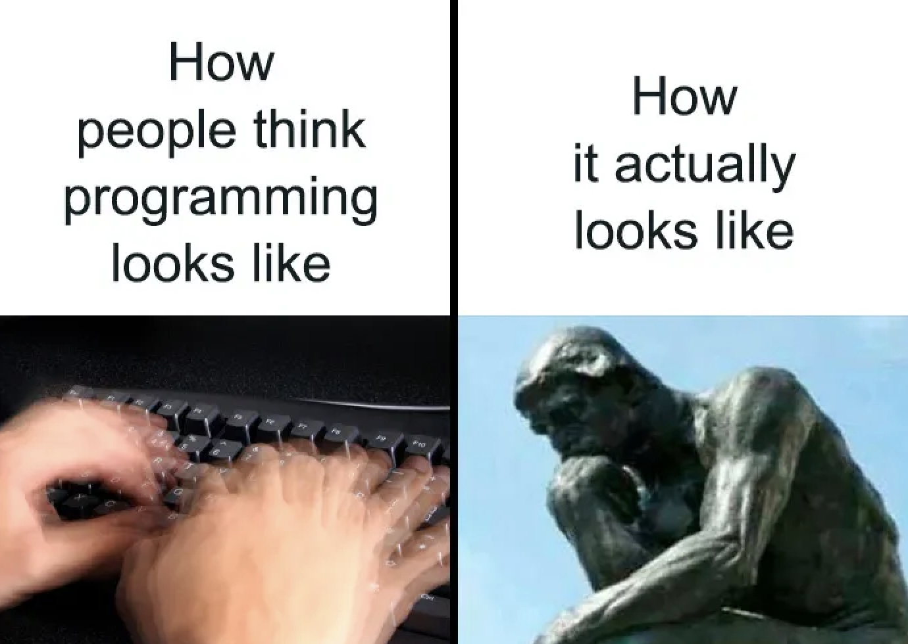
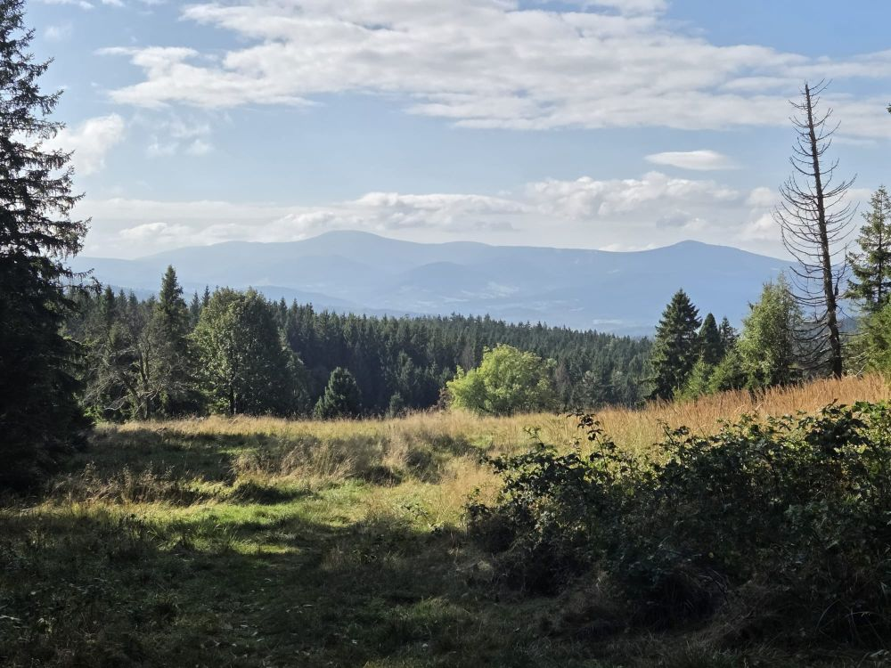

Advantages of Open Source Software

Explore the benefits of OSS and discover why openness matters.
Loading...
Explore the benefits of OSS and discover why openness matters.

Limitations to consider when discussing OSS.

Getting to know Zotero: What it is, Who can use it and How it works.